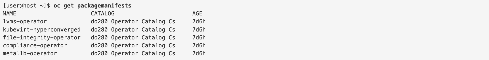

7. Kubernetes Operator
The operator pattern is a way to implement reusable software to manage complex workloads that might have maintenance tasks that can be automated, such as backing up data.
An operator typically defines custom resources (CRs). The operator CRs describes the needed information to deploy and manage the workload such as pod, persistentvolume.
Operator 类型¶
Info
可以将 Operator 比作 一个智能的管家 🕴🏼，它帮助管理 OpenShift 集群中的应用和服务。
- 就像一个管家会定期检查家里的情况，确保每个房间都保持整洁、设备正常工作，并且根据需要调整家里的布置，Operator 也会监控集群中的资源，确保它们按照预定的配置和规则运行。
- 如果家里的设备出现故障，管家会立刻修理或者替换。而 Operator 也会在集群中的应用或服务出现问题时，自动修复或重新启动它们。
- 管家还会根据需要调整家里的布置和规则，Operator 也会根据集群的需求自动进行更新、配置变更或扩展。
1. Cluster Operators¶
Cluster Operators 由 Cluster Version Operator (CVO) 管理. Cluster Operators 管理整个 Kubernetes 集群级别的资源和功能。它们通常负责关键的基础设施组件，如网络、存储、监控和日志记录等。比如web console， the OAuth server.
Cluster Operator可以再Webconsole中找到： Administration > Cluster Settings > ClusterOperators.
--> 此文档 列出了所有built-in ClusterOperators (约35个)。
CVO
The Cluster Version Operator (CVO) installs and updates Cluster Operators - as part of the OpenShift installation and update processes.
CVO 可以用来查看cluster operators的状态：
oc get clusteroperator
Warning
| Operator 类型 | 管理者 |
|---|---|
| Cluster Operators | Cluster Version Operator (CVO) |
| Add-on Operators | Operator Lifecycle Manager (OLM) |
2. Add-on Operators¶
Add-on Operators 由核心组件 Operator Lifecycle Manager (OLM) 管理。
Openshift的 webconsole 中可以看到四种级别的 Add-on：
Red Hat: 由 Red Hat 官方提供和支持，达到企业级的稳定性和安全标准Certified: 由第三方开发，并通过 Red Hat 认证，确保了与 OpenShift 的兼容性和质量标准。由第三方提供技术支持Community: 由开源社区或开发者提供和维护，没有正式的商业支持Marketplace: 在 OpenShift Marketplace 或 Kubernetes Marketplace 中提供的 Operators。
其他开源的 Add-on
这里operatorhub.io可以找到可用的 Add-on Operators，其中包含各种 级别 的Operator
Note
Add-on Operators have a different lifecycle from Cluster Operators. The CVO installs and updates Cluster Operators in lockstep with the cluster. Administrators use the OLM to install, update, and remove operators independently from cluster updates.
-> Cluster 的安装与更新 与 (CVO 对) Cluster Operators 的安装与更新 同步
OLM managed Resources
- Catalog source: Each catalog source resource references an operator repository.
- Package manifest: The OLM creates a package manifest for each available operator.
- Operator group: Operator groups define how the OLM presents operators across namespaces.
- Subscription: Cluster administrators create subscriptions to install operators.
- Operator: The OLM creates operator to store information about installed operators.
- Install plan: The OLM creates install plan as part of the installation and update process. When requiring approvals, administrators must approve install plans.
- Cluster service version (CSV): Each version of an operator has a corresponding CSV. The CSV contains the information that the OLM requires to install the operator.
Install Operator in CLI¶
Steps to install an Operator
- Locate the operator to install.
- Review the operator and its documentation for installation options and requirements.
- Decide the update channel to use.
- Decide the installation mode. For most operators, you should make them available to all namespaces.
- Decide to deploy the operator workload to an existing namespace or to a new namespace.
- Decide whether the Operator Lifecycle Manager (OLM) applies updates automatically, or requires an administrator to approve updates.
- Create an operator group if needed for the installation mode.
- Create a namespace for the operator workload if needed.
- Create the operator subscription.
- Review and test the operator installation.
1. Examine the operator¶
# Examine catalog sources
oc get catalogsource -n openshift-marketplace
# List the package manifests to know which operators are available for installation.
# a.k.a List Operators in current Catalog
oc get packagemanifests
# check detail of the operator 'lvms-operator'
oc describe packagemanifest lvms-operator -n openshift-marketplace
example

describe Operator details
- (1), (2): The catalog source and namespace for the operator,
- (3), (7): available channels and CSVs to decide which upgrade path to use.
- (4), (6): description and links for installation
- (5) install modes
2. [OPTIONAL] Create Operator Group¶
- Many operators recommend to use the existing
openshift-operatorsnamespace, or require specific namespaces. - The
openshift-operatorsnamespace contains aglobal-operatorsoperator group. Operators installed in this namespace, uses this group
Optionally, you can also - Create an operator group:
apiVersion: operators.coreos.com/v1
kind: OperatorGroup
metadata:
name: name
namespace: namespace # where OperatorGroup itself is located. Operator will be here too
spec:
targetNamespaces: # where the operator should be available or operate
- namespace
3. Create a subscription¶
apiVersion: operators.coreos.com/v1alpha1
kind: Subscription
metadata:
name: lvms-operator
namespace: openshift-storage
spec:
channel: stable-4.14
name: lvms-operator
source: do280-catalog-cs
installPlanApproval: Automatic # ‼️ or Manual
sourceNamespace: openshift-marketplace
4. Approve Install Plan¶
# check status
oc describe operator file-integrity-operator
# If the install plan mode is set to 'Manual' in the Subscription,
# then you must manually approve the install plan:
oc patch installplan install-pmh78 --type merge -p \
'{"spec":{"approved":true}}' -n openshift-file-integrity
oc patch
--type has 4 possible values:
merge: DEFAULT, only change the given valuestrategic-merge: similar tomerge, but specifically designed for Kubernetes resources.replace: replace the entire resourcejson: allows you to apply changes based on the JSON Patch standard
⚠️ With an 'Automatic' install plan mode, the OLM applies updates as soon as they are available.
Troubleshooting
Some operators require additional steps to install or update. Review the documentation to validate whether you performed all necessary steps, and to learn about support options.
3. Other Operators¶
Software providers can create software that follows the operator pattern, and then distribute the software as manifests, Helm charts, or any other software distribution mechanism.
View installed Operators¶
The Installed Operators page lists the installed cluster service version (CSV) as this:
or
oc get csv
Using installed Operators¶
Custom resources are the most common way to interact with operators. You can create custom resources:
You can create by view:
or by yaml:

Debugging¶
for troubleshooting you can check here:
Check the following:
- The status of Kubernetes workload resources, such as deployments or stateful sets
- Pod logs & status
- Events